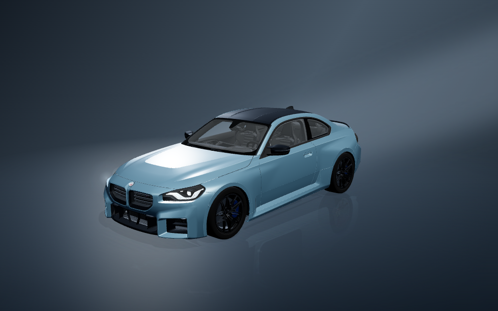

Choose the next machine.
A growing collection keeps every vehicle accessible from one consistent starting point.
INTERACTIVE 3D / VEHICLE PLATFORM
EXPANDING VEHICLE LIBRARY / LIVE BUILD
A growing digital garage designed to let people explore each vehicle through configurable, cinematic 3D experiences.
VIEW LIVE EXPERIENCE ↗
Most automotive showcases are designed as one-off pages around a single model. X Garage is built as a reusable platform where the vehicle changes, but the interaction language stays familiar.
Each machine receives its own real-time scene, story, specifications, and configurable states within one consistent garage designed to expand over time.
A shared interaction language makes every new vehicle easy to explore while leaving room for model-specific details.
A growing collection keeps every vehicle accessible from one consistent starting point.
Drag-to-rotate, zoom, and dedicated camera views reveal the proportions of each vehicle.
Colour, finish, access, and model-specific options update the active vehicle live.
Lighting states and welcome sequences turn functional controls into deliberate moments.
A focused study mode strips away distraction to reveal form, proportion, and stance.
Specifications, engineering details, and credits give each vehicle its own narrative layer.
A small set of controls maps to a broad range of visible states without turning the interface into a dashboard.
The active machine occupies the main visual field, with typography and controls arranged around it instead of over it.
Configuration, access, lighting, and camera controls respond in the same scene, making every choice easy to understand.
Shared patterns make new additions feel immediately familiar without erasing the character of each vehicle.
Study modes, specifications, engineering notes, and credits add context for people who want more detail.
Four reusable layers make it possible to add new vehicles without rebuilding the entire experience.
One garage.
More vehicles.
A growing experience.
X Garage turns separate vehicle showcases into one scalable library: cinematic enough to create desire, structured enough to explain each machine, and flexible enough to grow with every new addition.